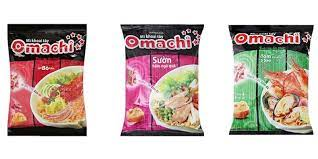

TOP các loại Mì ngon !!!

Sản Phẩm Mì Tôm Hảo Hảo
Mô tả sản phẩm : Sợi mì dai, ngon, mùi vị đặc trưng, không gây cảm giác ngán cho người dùng.

Sản Phẩm Mì Tôm Omachi
Mô tả sản phẩm : được sản xuất từ những nguyên liệu chọn lọc, tươi ngon. Vắt mì làm từ khoai tây tươi cùng với phần súp chứa mỡ bò, hành tây, tỏi, nước cốt từ thịt và xương… tạo nên hương vị hấp dẫn, ngon đúng điệu.